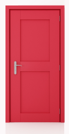

This project uses XBee and Spark Core to monitor whether door is open/close using a Magnetic Contact Switch (Door Sensor). The Door Sensor is connected to a remote XBee on Pin 4 (DIO4). The Spark Core is connected to Coordinator XBee and monitor the remote door. The remote XBee is configured to send IO sample every second.
 |